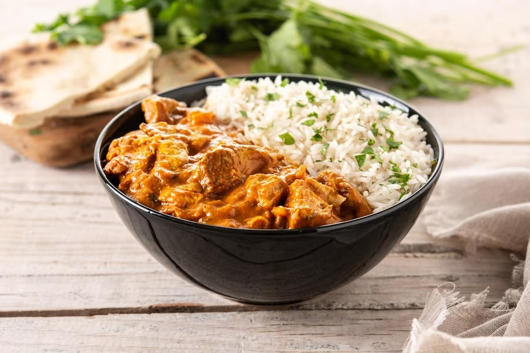

Strogonoff de frango

Ingredientes:
- 500g de peito de frango cortados em cubo
- 1 cebola grande picada
- 2 dentes de alho picados
- 1 lata de creme de leite (sem soro)
- 1 lata de molho de tomate
- 1 lata de milho verde (opcional)
- 2 colheres de sopa de ketchup
- 2 colheres de sopa de mostarda
- 1 colher de sopa de manteiga ou óleo
- Sal e pimenta do reino a gosto
- Salsinha picada para decorar (opcional)
- Arroz branco ou batata palha para acompanhar
Modo de preparo:
- Em uma frigideira grande, aqueça a manteiga ou óleo em fogo médio.
- Adicione a cebola picada e o alho na frigudeira e refogue até ficarem dourados.
- Acrescente o frango em cubos á frigideira e refogue até que esteja dourado e cozido por completo
- Adicione o molho de tomate, o milho, o ketchup e a mostarda na frigideira, mexendo bem para incorporar
os ingredientes.
- Reduza o fogo para médio-baixo e deixe o molho cozinhar por alguns minutos, permitindo que os sabores se
misturem.
- Tempere com sal e pimenta do reino a gosto. Lembre-se de provar o molho para ajustar o tempero conforme
sua preferência.
- Desligue o fogo e adicione o creme de leite no molho, mexendo delicadamento até que o strogonoff fique
cremoso e bem incorporado.
- Se preferir uma consistência mais espessa, deixe cozinhar por alguns minutos até atingir a textura
desejada.
- Sirva o strogonoff de frango quente acompanhado de arroz branco ou batata palha.
- Se desejar , polvilhe salsinha picada por cima antes de servir.
Essa receita serve de 4 a 6 porções, dependendo do apetite dos comensais. Lembre-se de ajustar as
quantidades de acordo com o número de pessoas que deseja servir. Bom apetite!
Sobre o prato:
O strogonoff de frango é um prato clássico da culinária mundial,
originário da Rússia, e popular em muitos países, incluindo o Brasil.
É uma receita versátil e deliciosa que combina pedaços de frango
suculentos, creme de leite, molho de tomate, cebola e temperos,
servido geralmente acompanhado de arroz branco ou batatas fritas.
O strogonoff de frango é uma refeição reconfortante e pode ser
adaptado conforme as preferências pessoais, podendo incluir
ingredientes como ketchup, mostarda, champignon, pimentão,
entre outros. É uma opção prática e rápida para agradar a
família e os amigos em diversas ocasiões.
O prato é conhecido por sua textura cremosa e saboroso, sendo
uma opção popular em festas, eventos ou até mesmo para o dia a
dia. Pode ser acompanhado por arroz branco, batata palha ou massa,
tornando-o uma escolha versátil para diversas refeições. Além
disso, facilidade de preparo faz com que seja uma ótima alternativa
para quem busca praticidade na cozinha.